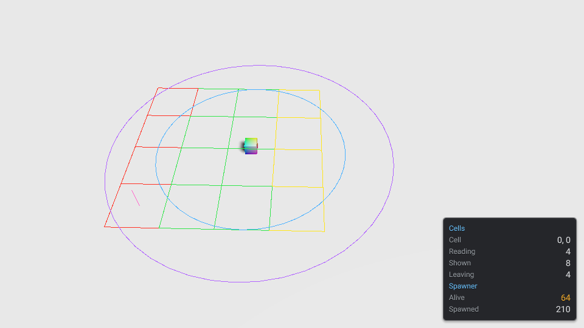

Debug tools
Show what a game is doing while it plays: readings in a panel over the screen and lines over the scene, each set turned on by name with one launch flag, and costing nothing when it is off.
module: awake:core:diagnostics
module: awake:world
Vulkan
WebGPU
Desktop · Android · iOS · Web

cells and spawner sources on, rendered by the engine. The short pink line on the left is the spawner source's post, drawn by SpawnerDebugSource.lines below.Sources and probes
A probe is a set of plain counters that a system keeps up to date every frame, whether or not anyone is looking: how many enemies are alive, which cells are loading. A test asserts on the probe.
A debug source is a view of a probe. It has an id, which is what turns it on, a title, and two
methods: rows writes readings for the panel, and lines writes world-space lines to draw over the
scene. A source measures nothing itself, so turning it on or off never changes what its probe counts.
DebugSource, DebugRows, DebugLines, DebugRegistry and DebugFlags are in
awake:core:diagnostics, which depends on the math and colour modules only. A source written against
it depends on nothing that draws, so it can sit next to the system it reports on.
Write a source
Start with the probe. The system owns it and writes it as it works:
// What a spawner counts, whether or not anyone is looking: its probe. The spawner writes it every frame.
class SpawnerProbe {
var alive = 0
var spawned = 0
val spawnPoint = Vec3f(0f, 0f, 0f)
}
The source reads the probe. Each row is a label and a number or text; warn = true shows the value
in amber. Each line is two points and a colour:
/** The spawner on the debug panel and over the scene: `--debug=spawner`. */
class SpawnerDebugSource(private val probe: SpawnerProbe) : DebugSource {
override val id = "spawner"
override val title = "Spawner"
// Reused for every line: the host copies the points, so drawing allocates nothing.
private val a = Vec3f(0f, 0f, 0f)
private val b = Vec3f(0f, 0f, 0f)
override fun rows(out: DebugRows) {
out.row("Alive", probe.alive, warn = probe.alive > MAX_ALIVE)
out.row("Spawned", probe.spawned)
}
override fun lines(out: DebugLines) {
// A post two metres tall at the spawn point.
val at = probe.spawnPoint
a.set(at.x, at.y, at.z)
b.set(at.x, at.y + 2f, at.z)
out.line(a, b, POST)
}
private companion object {
const val MAX_ALIVE = 50
val POST = Color(1f, 0.4f, 0.8f) // a constant: a Color made per line would allocate
}
}
- Keep it allocation-free. The host copies the two points of every line, so reuse a pair of
scratch
Vec3fs rather than making new ones, and keep eachColorin a constant. Pass the sameStringto a text row while its value is unchanged; the panel only re-renders a row whose value changed. - Keep it short. The panel has 16 rows by default, a source's title included. Rows past the last one are dropped.
Vec3f()is(1, 1, 1), not zero. WriteVec3f(0f, 0f, 0f)for a scratch point.
Turn sources on
A DebugRegistry holds the sources a game has and the ids that are on. Build it from the launch
flags: --debug=cells,spawner on desktop, ?debug=cells,spawner on the web.
val desktop = DebugRegistry(DebugFlags.fromArgs(listOf("--debug=cells,spawner")))
val web = DebugRegistry(DebugFlags.fromPage { name -> if (name == "debug") "cells" else null })
On the web, pass the page's query parameter to fromPage, for example
DebugFlags.fromPage(browserLaunchParameters()::first) (see
Launch parameters). Ids are trimmed, lower-cased and split on commas, and a
repeated flag adds to the set.
Then register the registry as an app service, and the sources with it:
fun debugTools(registry: DebugRegistry, spawner: SpawnerProbe): AwakeAppLifecycle = app {
// A scene on the default infrastructure systems draws the lines and the panel of every source that is on.
service(DebugRegistry::class, registry)
scene("debug-tools") {
val cells = frameSystem("cells") {
WorldPartitionSystem(WorldPartitionConfig(cellSize = 4f, loadingRadius = 8f, unloadRadius = 12f))
}
onReady {
// Off unless `cells` is in the flags: an off source is never added, so it costs nothing.
registry.register(WorldPartitionDebugSource(system(cells).probe))
registry.register(SpawnerDebugSource(spawner))
world.scene {
entity("camera") { camera(lens = Lens.perspective(eye = Vec3f(0f, 24f, 18f), center = Vec3f(0f, 0f, 0f))) }
entity("player") {
transform()
with(StreamObserver) // cells stream, and are drawn, around this entity
}
}
}
}
}
service(DebugRegistry::class, registry) is all a scene on the default infrastructure systems needs:
DebugVisualizationSystem draws the lines of every source that is on, and DebugPanelSystem shows
their rows. Hold one registry for the whole game. register returns a function that takes the source
out again; call it when the system the source reports on goes away.
The panel and the lines
The panel sits in the bottom right of the screen, over the game's own HUD. Each source that is on
shows its title in blue on a row of its own, then its rows: a label on the left, a value on the
right, a warning in amber. It reads the sources ten times a second and writes only the rows whose
values changed. DebugPanelStyle sets the number of rows, the corner it is pinned to, its offsets,
width and draw order, and debugPanelPrefab(style) is the panel as a prefab an editor can open.
The lines draw in the same call as the scene's other debug lines (the WorldDebugSettings toggles,
such as bounds and frustums), so neither set wipes out the other. They draw over the scene, never
hidden by it, and the renderer takes at most 65,536 lines a frame; any past that are dropped.
The world partition source
WorldPartitionSystem keeps a probe, a WorldPartitionProbe, of what it streams: the observer,
the cell it is in, and each active cell with its state. WorldPartitionDebugSource shows it, with
the id cells:
| Row | What it counts |
|---|---|
| Cell | The observer's cell, as x, z, or -- with no observer. |
| Reading | Active cells whose load is still in flight: their content isn't in the world yet. |
| Shown | Active cells loaded and within loadingRadius. |
| Leaving | Active cells loaded but past loadingRadius, kept only by the band up to unloadRadius: the next to go. |
| Line | Colour |
|---|---|
| A Reading cell's outline | Yellow (WorldPartitionDebugSource.READING) |
| A Shown cell's outline | Green (SHOWN) |
| A Leaving cell's outline | Red (LEAVING) |
| The loading radius, a circle of 48 lines around the observer | Blue (LOAD) |
| The unloading radius, a circle of 48 lines | Violet (UNLOAD) |
The lines lie flat 0.15 m over the observer's height, so they follow the player across the ground.
Tag the player with StreamObserver, as Large worlds recommends: a camera's own
height would show them edge on. Under a floating origin, cells are counted in absolute space and
drawn where the world currently is. A cell only reads when the system has an
asyncStreamListener and a loadScope; with a frame-thread listener every cell loads at once.
Zero cost when off
- A source whose id is not in the flags is never added to the registry, so no host ever calls it.
- With no source on, the panel is never made and the line host draws nothing it didn't before.
- The probe is written every frame either way: the counters cost a few array writes per active cell, and allocate nothing once its arrays have grown to the most cells that were ever active.
- A source that is on allocates nothing in a steady frame:
DebugLineBufferreuses each line's segment from the frame before, and the panel rebuilds a row's text only when its number changed.
With no renderer, headless or on a server, the hosts do nothing and the probes still count.
See also
- Large worlds for
WorldPartitionSystemand its radii. - Launch parameters for reading flags on every platform.
- Game UI for the canvas the panel is drawn on.